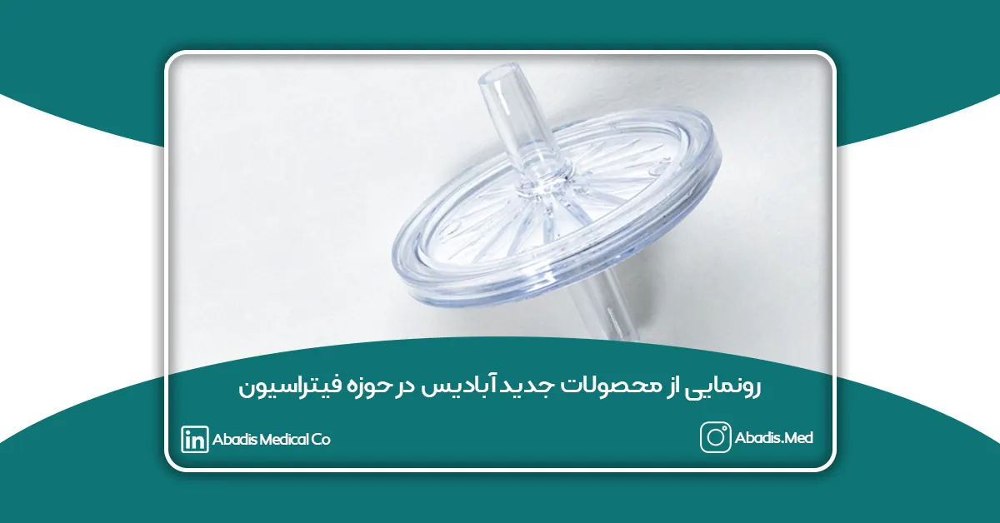
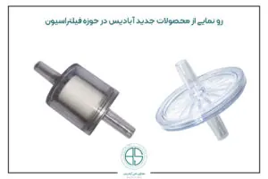

شرکت مخازن طبی آبادیس برای تکمیل سبد محصولات خود فیلتر قطع کننده جریان و فیلتر آنتی باکتریال را وارد چرخه تولید خود کرده است. فیلتر قطع کننده آبادیس مناسب برای قرار گرفتن بر سر راه دستگاه های ساکشن برای طول عمر بیشتر برای جلوگیری از ورود میکروارگانیزمها به محیط اطراف فیلتر آنتی باکتریال آبادیس مناسب برای قرار گرفتن بر سر راه دستگاه های ساکشن برای طول عمر بیشتر و جلوگیری از ورود گرد و خاک به دستگاههابرای دیدن اطلاعات بیشتر به این صفحه مراجعه فرمایید.